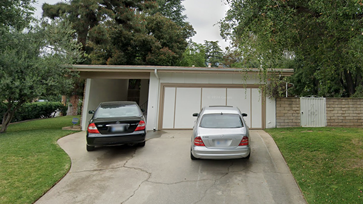
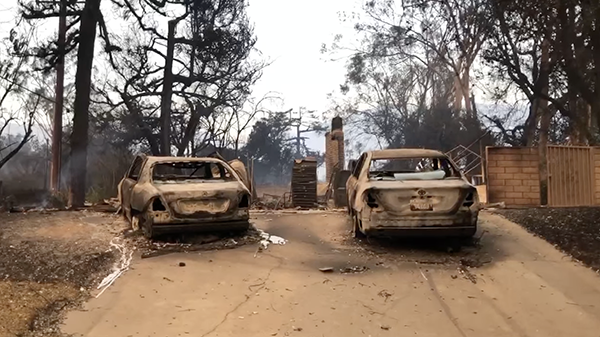

BEFORE: May 2024. Credit: Google Maps • AFTER: Burnt-out cars and remnants of a home burned from the Eaton Fire in Altadena, California, on January 9. Credit: Melissa Michelson
Graphic: Grace Manthey / CBS News